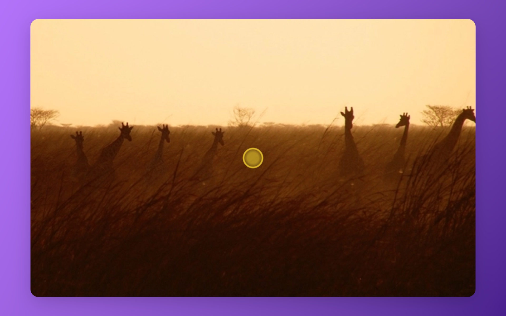
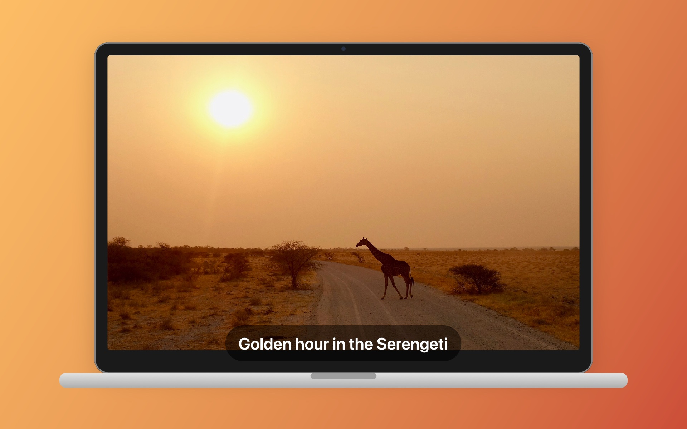
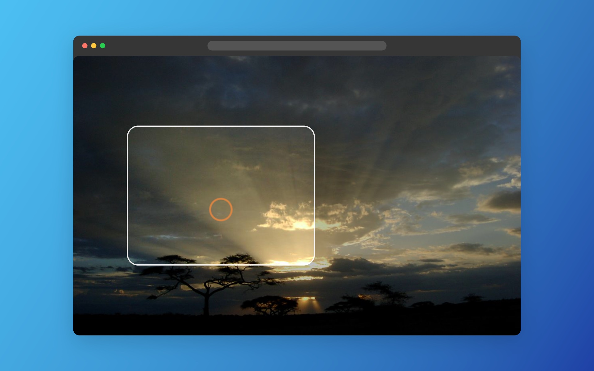
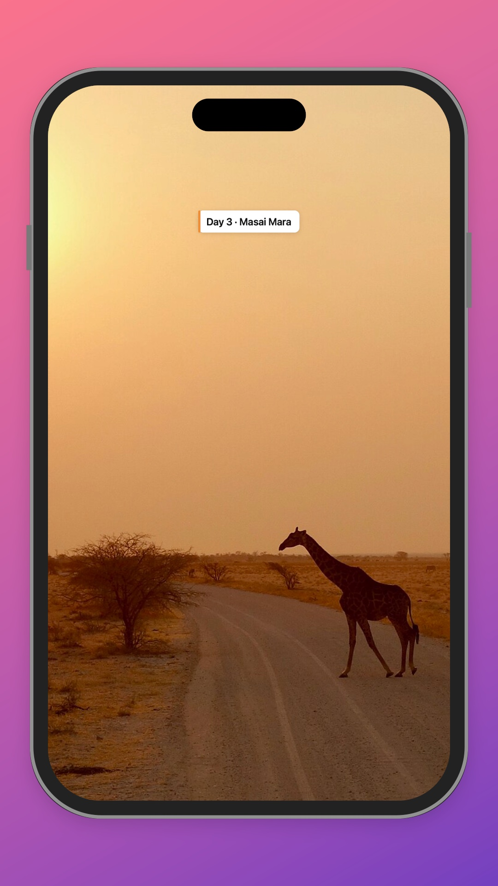
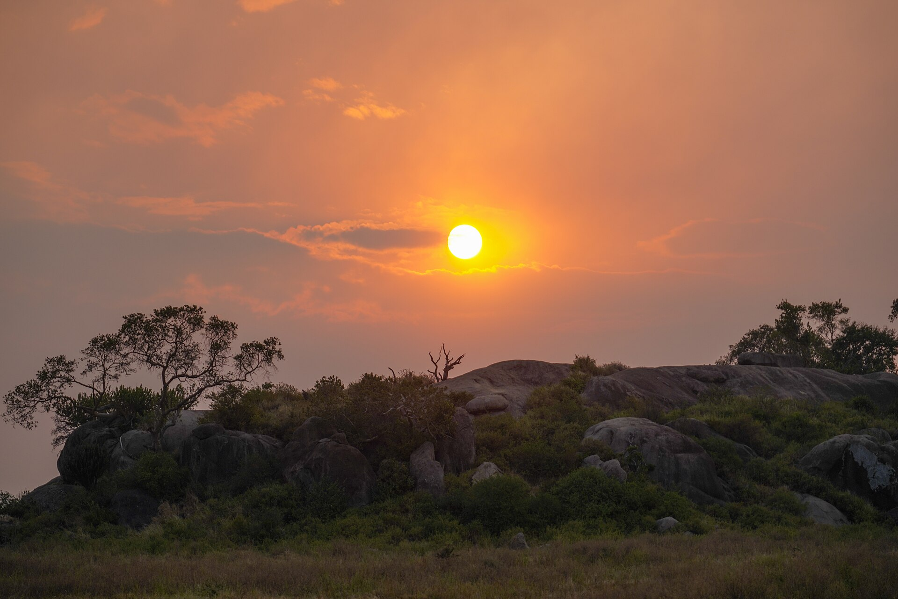
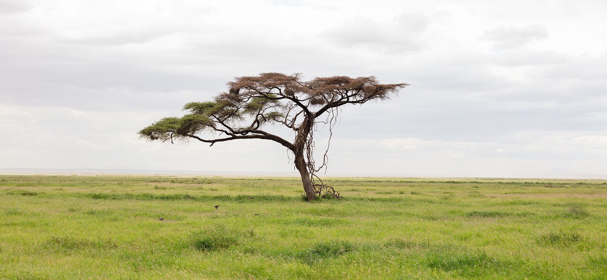
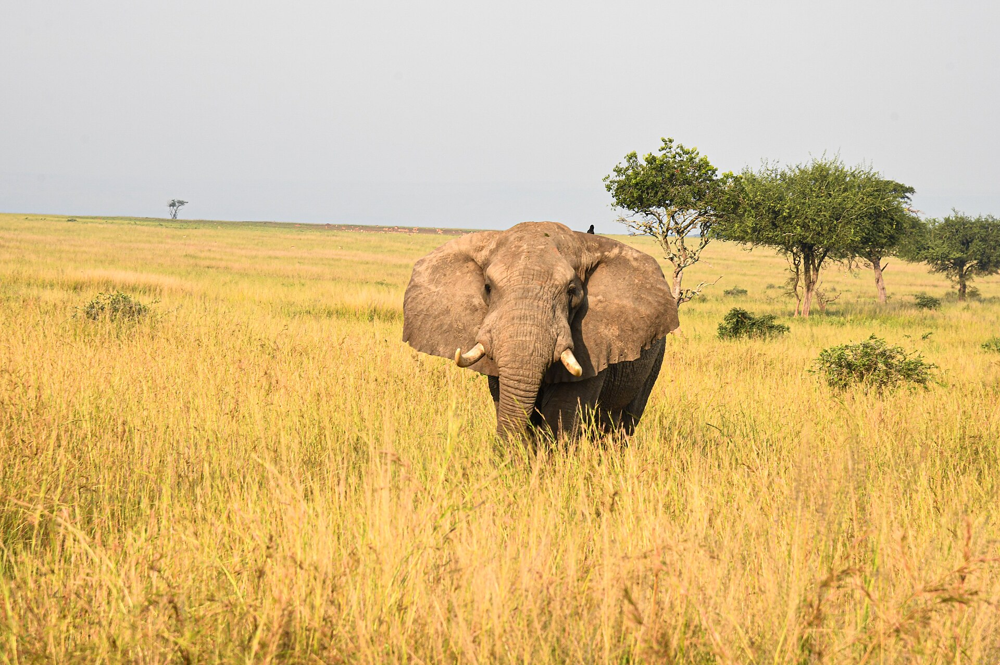
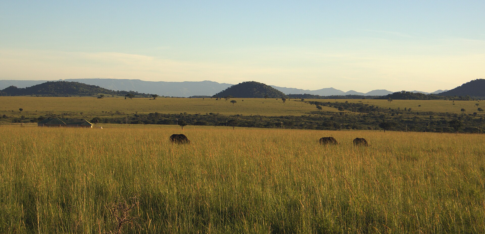
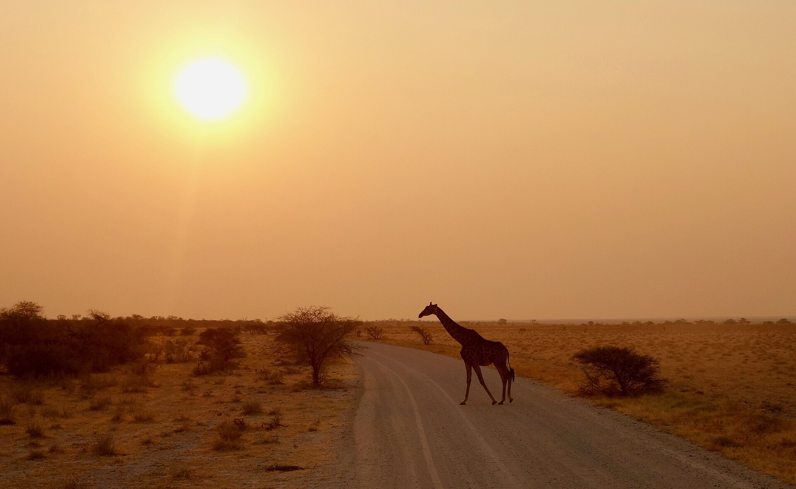

Download for MacRequires macOS 26 Tahoe or later · Apple silicon
Record all of it, or a corner
Press ⇧⌘1 for the whole screen or ⇧⌘2 to drag out a region. Talk if you like; Savanna listens.
1280 × 720
0:42
On-device AI writes the narration and reads it aloud, right on your Mac.
Press ⇧⌘1 for the whole screen or ⇧⌘2 to drag out a region. Talk if you like; Savanna listens.
On-device Apple Intelligence reads your screen and what you said, then drafts timed lines you can edit.
Meet Notely, the notes app that sorts your ideas for you.
Drop in a link and it files itself under the right project.
Search finds a thought by its meaning, not just its words.
54 lifelike voices built in, Apple voices in 49 languages, or a clone of your own voice. All on your Mac.
Zooms follow your clicks or your pointer. Text, blur and highlights are one click from the timeline.

MP4 or HEVC, framed on a MacBook, a browser or an iPhone. The library remembers where every video went.


First, you just record.
“Meet Notely, the notes app that sorts your ideas for you.”
Then AI drafts the script.
Then a voice reads it.
~/Movies/Notely in a minute.mp4
Then it lives where you want.
Every Savanna video starts with this button. Go on, it works.
Every effect lands at the playhead with good defaults. Drag to adjust it, or don't.
Follows your clicks or your pointer, from 1.1× to 4×.

MacBook, browser window or iPhone.
Hide a password or spotlight a button in one drag.
Nothing happens for 2.1s at the start. Cutting dead time makes a video feel professional.
ApplyExplains each suggestion before it changes anything.
Scripts and voices in 49 languages.

Named for the hour the grassland turns gold and the story tells itself. It does that for your screen.



396words
Savanna's voices speak about 2.2 words a second, so that's the narration it drafts for you, timed to what happens on screen.
No. Recording, transcription, the AI script and every voice run on your Mac. Natural voices and voice cloning download once, then work offline.
A Mac with Apple silicon (M1 or later) on macOS 26. AI scripts need Apple Intelligence turned on; recording, editing, voices and export work on any Mac that runs macOS 26.
Any language with an Apple voice on your Mac, 49 on a standard install. The AI writes the script in the language you pick, even when your screen is in another one.
Talk while you record and Savanna turns your words into polished, timed lines. You can also narrate with your Personal Voice, or clone your own voice: read a short paragraph aloud and Savanna sets everything up for you.
Every line is editable, and you can add a line anywhere on the timeline. The AI gives you a first draft, never the last word.
Wherever you save them, as MP4 or MOV. The library keeps track of each one, even after you move the file.
Savanna won't guess. If a clip is tiny and silent, it asks you for a few words about it before writing anything.

Savanna is a native Mac app. Download it, press ⇧⌘1, and talk.
Free download. Release notes